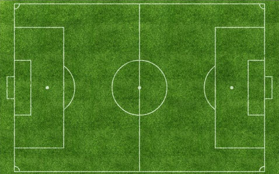

footb-all

Today's teams
I want to play
When this will be on
I don't want this
How does this work
This is a project that I hope will be a good thing for you of all H-Farm, I created this site also if I don't like to much soccer, but every
day it is always a caos for decide who goes in which team in each day! So I create this project, some days there will be a fortune
wheel that will select some ages like MYP5 and MYP3 so, that day, the ones of the two teams can go and play in the red pitch, don't be
afraid, this will work only two days of the week.